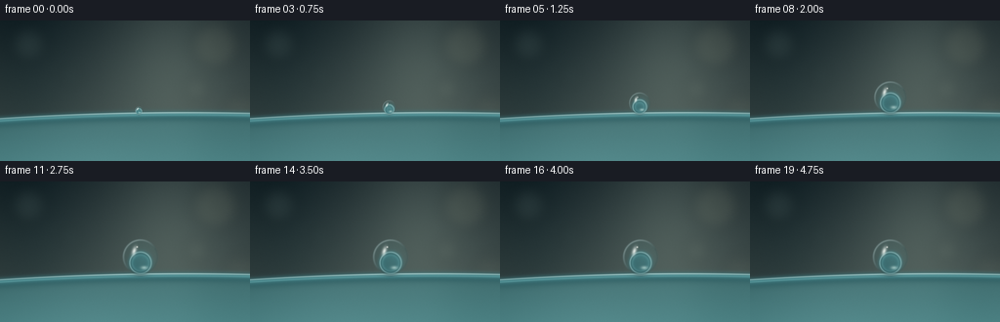
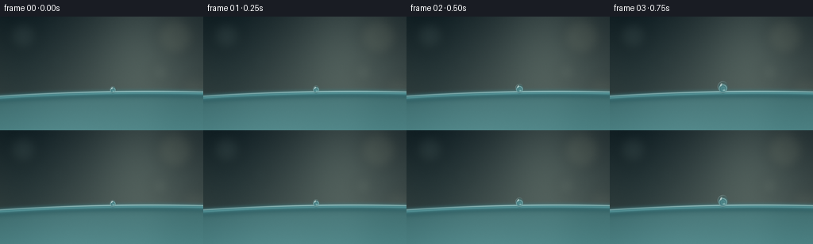

CODING AGENTS AS PIXEL WORLD MODELS
traex/GPT-5.6-Sol · mechanics_0055
点击播放 · 原生 RGB 像素
逐轮保存的候选
回放视频、检查图与代码变化。
每份候选均可单独播放。实际图片检查记录在下方工具轨迹中。
候选 01播放与检查图
点击播放 · 原生 RGB 像素


展开代码变化
--- 上一保存版本
+++ 本次保存版本
@@ -0,0 +1,213 @@
+from pathlib import Path
+import json
+import numpy as np
+from PIL import Image, ImageDraw, ImageFilter
+import artifact_io
+
+# Deterministic, fully procedural macro render.
+ROOT = Path(__file__).resolve().parent
+spec = json.loads((ROOT / "task_spec.json").read_text())
+W, H, N = spec["width"], spec["height"], spec["frames"]
+S = 3
+w, h = W * S, H * S
+rng = np.random.default_rng(5501)
+
+Y, X = np.mgrid[0:h, 0:w]
+xf, yf = X / S, Y / S
+
+
+def smoothstep(a, b, x):
+ z = np.clip((x - a) / (b - a), 0.0, 1.0)
+ return z * z * (3.0 - 2.0 * z)
+
+
+def over(base, color, alpha):
+ """Alpha composite color over a floating point RGB image."""
+ if np.ndim(color) == 1:
+ color = np.asarray(color, np.float32)[None, None, :]
+ return base * (1.0 - alpha[..., None]) + color * alpha[..., None]
+
+
+def bilinear(img, sx, sy):
+ sx = np.clip(sx, 0, w - 1.001)
+ sy = np.clip(sy, 0, h - 1.001)
+ x0 = np.floor(sx).astype(np.int32)
+ y0 = np.floor(sy).astype(np.int32)
+ x1 = np.minimum(x0 + 1, w - 1)
+ y1 = np.minimum(y0 + 1, h - 1)
+ ax = (sx - x0)[..., None]
+ ay = (sy - y0)[..., None]
+ top = img[y0, x0] * (1 - ax) + img[y0, x1] * ax
+ bot = img[y1, x0] * (1 - ax) + img[y1, x1] * ax
+ return top * (1 - ay) + bot * ay
+
+
+def rim_y(x):
+ # Graceful shallow curve of a smooth plastic cup lip.
+ return 95.3 - 0.021 * (x - 128.0) + 0.00017 * (x - 128.0) ** 2
+
+
+def make_environment(frame_idx):
+ # Muted teal-grey macro background with a bright window reflection.
+ yy = yf / H
+ xx = xf / W
+ top = np.array([33., 47., 50.])
+ bottom = np.array([77., 91., 87.])
+ img = top[None, None, :] * (1 - yy[..., None]) + bottom[None, None, :] * yy[..., None]
+ img += (7.0 * xx - 2.5)[..., None]
+
+ # Broad, out-of-focus vertical window light and shadow falloff.
+ window = np.exp(-((xf - 176.0) / 58.0) ** 2) * np.exp(-((yf - 38.0) / 98.0) ** 2)
+ img += window[..., None] * np.array([26., 27., 23.])[None, None, :]
+ left_shadow = np.exp(-((xf - 25.0) / 56.0) ** 2)
+ img -= left_shadow[..., None] * np.array([13., 11., 9.])[None, None, :]
+
+ # Lens bokeh rendered on a separate defocused layer.
+ bokeh = Image.new("RGBA", (w, h), (0, 0, 0, 0))
+ d = ImageDraw.Draw(bokeh, "RGBA")
+ spots = [
+ (29, 24, 18, (165, 189, 180, 26)),
+ (221, 25, 24, (188, 186, 151, 25)),
+ (202, 70, 11, (199, 211, 189, 22)),
+ (72, 56, 8, (128, 171, 163, 18)),
+ (245, 91, 16, (205, 198, 161, 13)),
+ ]
+ for cx, cy, r, col in spots:
+ d.ellipse(((cx-r)*S, (cy-r)*S, (cx+r)*S, (cy+r)*S), fill=col)
+ bokeh = bokeh.filter(ImageFilter.GaussianBlur(7*S))
+ bk = np.asarray(bokeh, np.float32)
+ a = bk[..., 3] / 255.0
+ img = over(img, bk[..., :3], a)
+
+ # Subtle cinematic vignette.
+ vig = np.clip(((xf - W/2)/(W*.73))**2 + ((yf - H*.48)/(H*.85))**2, 0, 1)
+ img *= (1.0 - 0.18 * vig[..., None])
+ return img
+
+
+def add_cup(img):
+ ry = rim_y(xf)
+ signed = yf - ry
+
+ # Translucent plastic cup body: gently illuminated, with vertical molded variation.
+ body_a = smoothstep(-0.7, 1.2, signed)
+ depth = np.clip(signed / 52.0, 0, 1)
+ plastic = np.zeros_like(img)
+ plastic[..., 0] = 69 + 12*depth
+ plastic[..., 1] = 123 + 18*depth
+ plastic[..., 2] = 126 + 18*depth
+ molded = 5.0*np.sin((xf-20)/45.0) + 3.0*np.exp(-((xf-183)/30)**2)
+ plastic += molded[..., None]
+ alpha = body_a * (0.77 + 0.10*depth)
+ img = over(img, plastic, alpha)
+
+ # Interior just under the lip adds depth and reads clearly as a cup, not a table.
+ interior = np.exp(-((signed - 4.3) / 5.4) ** 2)
+ img = over(img, np.array([34., 76., 80.]), 0.28 * interior)
+
+ # Smooth rounded lip: lower shade, cyan body, narrow glossy upper edge.
+ lip = np.exp(-((signed - 1.8) / 3.8) ** 2)
+ img = over(img, np.array([70., 137., 143.]), 0.75 * lip)
+ lip_shadow = np.exp(-((signed - 5.0) / 2.7) ** 2)
+ img = over(img, np.array([39., 82., 87.]), 0.32 * lip_shadow)
+ edge_hi = np.exp(-((signed + 0.15) / 0.72) ** 2)
+ edge_hi *= 0.62 + 0.38*np.exp(-((xf-165)/92)**2)
+ img = over(img, np.array([195., 231., 229.]), 0.74 * edge_hi)
+ # Very fine dry surface sheen along the molded plastic.
+ lower_hi = np.exp(-((signed - 2.1) / 0.85) ** 2)
+ img = over(img, np.array([130., 195., 197.]), 0.30 * lower_hi)
+ return img
+
+
+def add_droplet(img, frame_idx):
+ # A bead grows out of an initial wet nucleus; final 2 seconds are nearly still.
+ u = smoothstep(0.0, 10.0, float(frame_idx))
+ r = 4.1 + 14.8*u
+ if frame_idx > 10:
+ # Microscopic damped settling, while surface tension keeps the round silhouette.
+ r += 0.16*np.exp(-(frame_idx-10)/3.2)*np.sin((frame_idx-10)*1.85)
+ cx = 143.7 - 1.7*(1-u) + (0.12*np.sin(frame_idx*0.55) if frame_idx > 10 else 0)
+ contact_y = float(rim_y(cx)) + 1.15
+ cy = contact_y - r
+ # Tiny elastic deformation only while accumulating; it resolves into a sphere.
+ aspect_x = 0.975 + 0.025*u
+ aspect_y = 1.018 - 0.018*u
+ rx, ry = r*aspect_x, r*aspect_y
+
+ dx = (xf - cx) / rx
+ dy = (yf - cy) / ry
+ q2 = dx*dx + dy*dy
+ q = np.sqrt(np.maximum(q2, 0))
+
+ # Soft contact shadow grounds the bead precisely on the curved rim.
+ shadow = np.exp(-(((xf-cx)/(r*.62+1.2))**2 + ((yf-contact_y)/(1.2+0.045*r))**2)*2.3)
+ img = over(img, np.array([21., 49., 52.]), shadow * (0.22 + 0.16*u))
+
+ # Water lens: refracts a compressed patch of background and bends the lip through it.
+ # Mapping a local background patch through the sphere provides recognizable magnification.
+ inside = q2 <= 1.0
+ sphere_z = np.sqrt(np.clip(1.0-q2, 0, 1))
+ lens_scale = 0.60 + 0.14*(1.0-sphere_z)
+ sx = (cx + (xf-cx)*lens_scale) * S
+ sy = (cy + (yf-cy)*lens_scale + 1.15*r*(sphere_z**1.6)) * S
+ refr = bilinear(img, sx, sy)
+ refr = refr * np.array([0.94, 1.015, 1.025])[None, None, :] + np.array([3., 5., 5.])
+
+ # Antialiased silhouette and transparent watery base.
+ aa = np.clip((1.012-q) * (S*2.1), 0, 1)
+ water_alpha = aa * (0.72 + 0.08*sphere_z)
+ img = img*(1-water_alpha[..., None]) + refr*water_alpha[..., None]
+
+ # Fresnel rim: dark internal contour on the shaded side and silver lit edge.
+ shell = np.exp(-((q-0.925)/0.053)**2) * aa
+ shade_dir = np.clip(0.58 + 0.52*dx + 0.22*dy, 0, 1)
+ dark_shell = shell * (0.16 + 0.34*(1-shade_dir))
+ img = over(img, np.array([25., 55., 59.]), dark_shell)
+ bright_side = shell * np.clip(0.22 - 0.66*dx - 0.72*dy, 0, 1) * 0.55
+ img = over(img, np.array([226., 244., 241.]), bright_side)
+
+ # Soft volume shading gives the transparent bead a definite spherical body.
+ lower_shade = inside * np.clip((dy+0.04)*0.18, 0, .16) * sphere_z
+ img = over(img, np.array([49., 91., 95.]), lower_shade)
+ inner_glow = np.exp(-(((dx-0.22)/0.62)**2 + ((dy-0.14)/0.72)**2)*2.0) * inside
+ img = over(img, np.array([150., 196., 194.]), inner_glow*0.075)
+
+ # Window speculars: a tall soft streak, a crisp pin light, and a lower caustic.
+ # The highlights scale with the bead, remaining visible during formation.
+ ang = -0.30
+ ca, sa = np.cos(ang), np.sin(ang)
+ hx = xf - (cx - 0.34*r)
+ hy = yf - (cy - 0.32*r)
+ hu = (hx*ca - hy*sa) / max(1.0, 0.16*r)
+ hv = (hx*sa + hy*ca) / max(1.2, 0.34*r)
+ spec1 = np.exp(-(hu*hu + hv*hv)*2.2) * inside
+ img = over(img, np.array([244., 251., 246.]), spec1*0.84)
+ spec2 = np.exp(-(((xf-(cx-0.18*r))/max(0.7,.065*r))**2 + ((yf-(cy-0.54*r))/max(0.7,.065*r))**2)*2.4) * inside
+ img = over(img, np.array([255., 255., 249.]), spec2*0.88)
+ caustic = np.exp(-(((xf-(cx+0.20*r))/(0.22*r+0.8))**2 + ((yf-(cy+0.58*r))/(0.105*r+0.7))**2)*2.3) * inside
+ img = over(img, np.array([207., 237., 230.]), caustic*0.58)
+
+ # Fine contact glint and meniscus at the exact resting point.
+ meniscus = np.exp(-(((xf-cx)/(0.48*r+1))**2 + ((yf-contact_y)/0.62)**2)*2.0)
+ img = over(img, np.array([190., 224., 222.]), meniscus*0.42)
+ contact_dark = np.exp(-(((xf-cx)/(0.29*r+0.8))**2 + ((yf-(contact_y+0.7))/0.62)**2)*2.2)
+ img = over(img, np.array([29., 67., 71.]), contact_dark*0.28)
+ return img
+
+
+frames = []
+# Fixed sensor grain field avoids distracting random flicker.
+grain = rng.normal(0, 0.9, (h, w, 1)).astype(np.float32)
+for i in range(N):
+ frame = make_environment(i)
+ frame = add_cup(frame)
+ frame = add_droplet(frame, i)
+ frame += grain
+ frame = np.clip(frame, 0, 255).astype(np.uint8)
+ # High-resolution render reduced with Lanczos for smooth macro contours.
+ frame = np.asarray(Image.fromarray(frame, "RGB").resize((W, H), Image.Resampling.LANCZOS))
+ frames.append(frame)
+
+frames = np.stack(frames).astype(np.uint8)
+artifact_io.save(frames, ROOT)
+print(f"saved {frames.shape[0]} RGB frames at {frames.shape[2]}x{frames.shape[1]}")
可观测工具轨迹
实际执行的命令与返回图片。
命令 1exit 0
/bin/bash -lc "cat prompt.txt && printf '\\n--- GENERATION_RULES ---\\n' && cat GENERATION_RULES.md && printf '\\n--- TASK_SPEC ---\\n' && cat task_spec.json"
命令 2exit 0
/bin/bash -lc "find . -maxdepth 2 -type f -printf '%p\\n' | sort && printf '\\n--- binaries ---\\n' && command -v ffmpeg || true && command -v python3 || true"
命令 3exit 0
/bin/bash -lc 'cat artifact_io.py'
命令 4exit 0
/bin/bash -lc "cat > generate.py <<'PY'
from pathlib import Path
import json
import numpy as np
from PIL import Image, ImageDraw, ImageFilter
import artifact_io
# Deterministic, fully procedural macro render.
ROOT = Path(__file__).resolve().parent
spec = json.loads((ROOT / \"task_spec.json\").read_text())
W, H, N = spec[\"width\"], spec[\"height\"], spec[\"frames\"]
S = 3
w, h = W * S, H * S
rng = np.random.default_rng(5501)
Y, X = np.mgrid[0:h, 0:w]
xf, yf = X / S, Y / S
def smoothstep(a, b, x):
z = np.clip((x - a) / (b - a), 0.0, 1.0)
return z * z * (3.0 - 2.0 * z)
def over(base, color, alpha):
\"\"\"Alpha composite color over a floating point RGB image.\"\"\"
if np.ndim(color) == 1:
color = np.asarray(color, np.float32)[None, None, :]
return base * (1.0 - alpha[..., None]) + color * alpha[..., None]
def bilinear(img, sx, sy):
sx = np.clip(sx, 0, w - 1.001)
sy = np.clip(sy, 0, h - 1.001)
x0 = np.floor(sx).astype(np.int32)
y0 = np.floor(sy).astype(np.int32)
x1 = np.minimum(x0 + 1, w - 1)
y1 = np.minimum(y0 + 1, h - 1)
ax = (sx - x0)[..., None]
ay = (sy - y0)[..., None]
top = img[y0, x0] * (1 - ax) + img[y0, x1] * ax
bot = img[y1, x0] * (1 - ax) + img[y1, x1] * ax
return top * (1 - ay) + bot * ay
def rim_y(x):
# Graceful shallow curve of a smooth plastic cup lip.
return 95.3 - 0.021 * (x - 128.0) + 0.00017 * (x - 128.0) ** 2
def make_environment(frame_idx):
# Muted teal-grey macro background with a bright window reflection.
yy = yf / H
xx = xf / W
top = np.array([33., 47., 50.])
bottom = np.array([77., 91., 87.])
img = top[None, None, :] * (1 - yy[..., None]) + bottom[None, None, :] * yy[..., None]
img += (7.0 * xx - 2.5)[..., None]
# Broad, out-of-focus vertical window light and shadow falloff.
window = np.exp(-((xf - 176.0) / 58.0) ** 2) * np.exp(-((yf - 38.0) / 98.0) ** 2)
img += window[..., None] * np.array([26., 27., 23.])[None, None, :]
left_shadow = np.exp(-((xf - 25.0) / 56.0) ** 2)
img -= left_shadow[..., None] * np.array([13., 11., 9.])[None, None, :]
# Lens bokeh rendered on a separate defocused layer.
bokeh = Image.new(\"RGBA\", (w, h), (0, 0, 0, 0))
d = ImageDraw.Draw(bokeh, \"RGBA\")
spots = [
(29, 24, 18, (165, 189, 180, 26)),
(221, 25, 24, (188, 186, 151, 25)),
(202, 70, 11, (199, 211, 189, 22)),
(72, 56, 8, (128, 171, 163, 18)),
(245, 91, 16, (205, 198, 161, 13)),
]
for cx, cy, r, col in spots:
d.ellipse(((cx-r)*S, (cy-r)*S, (cx+r)*S, (cy+r)*S), fill=col)
bokeh = bokeh.filter(ImageFilter.GaussianBlur(7*S))
bk = np.asarray(bokeh, np.float32)
a = bk[..., 3] / 255.0
img = over(img, bk[..., :3], a)
# Subtle cinematic vignette.
vig = np.clip(((xf - W/2)/(W*.73))**2 + ((yf - H*.48)/(H*.85))**2, 0, 1)
img *= (1.0 - 0.18 * vig[..., None])
return img
def add_cup(img):
ry = rim_y(xf)
signed = yf - ry
# Translucent plastic cup body: gently illuminated, with vertical molded variation.
body_a = smoothstep(-0.7, 1.2, signed)
depth = np.clip(signed / 52.0, 0, 1)
plastic = np.zeros_like(img)
plastic[..., 0] = 69 + 12*depth
plastic[..., 1] = 123 + 18*depth
plastic[..., 2] = 126 + 18*depth
molded = 5.0*np.sin((xf-20)/45.0) + 3.0*np.exp(-((xf-183)/30)**2)
plastic += molded[..., None]
alpha = body_a * (0.77 + 0.10*depth)
img = over(img, plastic, alpha)
# Interior just under the lip adds depth and reads clearly as a cup, not a table.
interior = np.exp(-((signed - 4.3) / 5.4) ** 2)
img = over(img, np.array([34., 76., 80.]), 0.28 * interior)
# Smooth rounded lip: lower shade, cyan body, narrow glossy upper edge.
lip = np.exp(-((signed - 1.8) / 3.8) ** 2)
img = over(img, np.array([70., 137., 143.]), 0.75 * lip)
lip_shadow = np.exp(-((signed - 5.0) / 2.7) ** 2)
img = over(img, np.array([39., 82., 87.]), 0.32 * lip_shadow)
edge_hi = np.exp(-((signed + 0.15) / 0.72) ** 2)
edge_hi *= 0.62 + 0.38*np.exp(-((xf-165)/92)**2)
img = over(img, np.array([195., 231., 229.]), 0.74 * edge_hi)
# Very fine dry surface sheen along the molded plastic.
lower_hi = np.exp(-((signed - 2.1) / 0.85) ** 2)
img = over(img, np.array([130., 195., 197.]), 0.30 * lower_hi)
return img
def add_droplet(img, frame_idx):
# A bead grows out of an initial wet nucleus; final 2 seconds are nearly still.
u = smoothstep(0.0, 10.0, float(frame_idx))
r = 4.1 + 14.8*u
if frame_idx > 10:
# Microscopic damped settling, while surface tension keeps the round silhouette.
r += 0.16*np.exp(-(frame_idx-10)/3.2)*np.sin((frame_idx-10)*1.85)
cx = 143.7 - 1.7*(1-u) + (0.12*np.sin(frame_idx*0.55) if frame_idx > 10 else 0)
contact_y = float(rim_y(cx)) + 1.15
cy = contact_y - r
# Tiny elastic deformation only while accumulating; it resolves into a sphere.
aspect_x = 0.975 + 0.025*u
aspect_y = 1.018 - 0.018*u
rx, ry = r*aspect_x, r*aspect_y
dx = (xf - cx) / rx
dy = (yf - cy) / ry
q2 = dx*dx + dy*dy
q = np.sqrt(np.maximum(q2, 0))
# Soft contact shadow grounds the bead precisely on the curved rim.
shadow = np.exp(-(((xf-cx)/(r*.62+1.2))**2 + ((yf-contact_y)/(1.2+0.045*r))**2)*2.3)
img = over(img, np.array([21., 49., 52.]), shadow * (0.22 + 0.16*u))
# Water lens: refracts a compressed patch of background and bends the lip through it.
# Mapping a local background patch through the sphere provides recognizable magnification.
inside = q2 <= 1.0
sphere_z = np.sqrt(np.clip(1.0-q2, 0, 1))
lens_scale = 0.60 + 0.14*(1.0-sphere_z)
sx = (cx + (xf-cx)*lens_scale) * S
sy = (cy + (yf-cy)*lens_scale + 1.15*r*(sphere_z**1.6)) * S
refr = bilinear(img, sx, sy)
refr = refr * np.array([0.94, 1.015, 1.025])[None, None, :] + np.array([3., 5., 5.])
# Antialiased silhouette and transparent watery base.
aa = np.clip((1.012-q) * (S*2.1), 0, 1)
water_alpha = aa * (0.72 + 0.08*sphere_z)
img = img*(1-water_alpha[..., None]) + refr*water_alpha[..., None]
# Fresnel rim: dark internal contour on the shaded side and silver lit edge.
shell = np.exp(-((q-0.925)/0.053)**2) * aa
shade_dir = np.clip(0.58 + 0.52*dx + 0.22*dy, 0, 1)
dark_shell = shell * (0.16 + 0.34*(1-shade_dir))
img = over(img, np.array([25., 55., 59.]), dark_shell)
bright_side = shell * np.clip(0.22 - 0.66*dx - 0.72*dy, 0, 1) * 0.55
img = over(img, np.array([226., 244., 241.]), bright_side)
# Soft volume shading gives the transparent bead a definite spherical body.
lower_shade = inside * np.clip((dy+0.04)*0.18, 0, .16) * sphere_z
img = over(img, np.array([49., 91., 95.]), lower_shade)
inner_glow = np.exp(-(((dx-0.22)/0.62)**2 + ((dy-0.14)/0.72)**2)*2.0) * inside
img = over(img, np.array([150., 196., 194.]), inner_glow*0.075)
# Window speculars: a tall soft streak, a crisp pin light, and a lower caustic.
# The highlights scale with the bead, remaining visible during formation.
ang = -0.30
ca, sa = np.cos(ang), np.sin(ang)
hx = xf - (cx - 0.34*r)
hy = yf - (cy - 0.32*r)
hu = (hx*ca - hy*sa) / max(1.0, 0.16*r)
hv = (hx*sa + hy*ca) / max(1.2, 0.34*r)
spec1 = np.exp(-(hu*hu + hv*hv)*2.2) * inside
img = over(img, np.array([244., 251., 246.]), spec1*0.84)
spec2 = np.exp(-(((xf-(cx-0.18*r))/max(0.7,.065*r))**2 + ((yf-(cy-0.54*r))/max(0.7,.065*r))**2)*2.4) * inside
img = over(img, np.array([255., 255., 249.]), spec2*0.88)
caustic = np.exp(-(((xf-(cx+0.20*r))/(0.22*r+0.8))**2 + ((yf-(cy+0.58*r))/(0.105*r+0.7))**2)*2.3) * inside
img = over(img, np.array([207., 237., 230.]), caustic*0.58)
# Fine contact glint and meniscus at the exact resting point.
meniscus = np.exp(-(((xf-cx)/(0.48*r+1))**2 + ((yf-contact_y)/0.62)**2)*2.0)
img = over(img, np.array([190., 224., 222.]), meniscus*0.42)
contact_dark = np.exp(-(((xf-cx)/(0.29*r+0.8))**2 + ((yf-(contact_y+0.7))/0.62)**2)*2.2)
img = over(img, np.array([29., 67., 71.]), contact_dark*0.28)
return img
frames = []
# Fixed sensor grain field avoids distracting random flicker.
grain = rng.normal(0, 0.9, (h, w, 1)).astype(np.float32)
for i in range(N):
frame = make_environment(i)
frame = add_cup(frame)
frame = add_droplet(frame, i)
frame += grain
frame = np.clip(frame, 0, 255).astype(np.uint8)
# High-resolution render reduced with Lanczos for smooth macro contours.
frame = np.asarray(Image.fromarray(frame, \"RGB\").resize((W, H), Image.Resampling.LANCZOS))
frames.append(frame)
frames = np.stack(frames).astype(np.uint8)
artifact_io.save(frames, ROOT)
print(f\"saved {frames.shape[0]} RGB frames at {frames.shape[2]}x{frames.shape[1]}\")
PY
python3 generate.py
python3 - <<'PY'
import numpy as np
from PIL import Image
from pathlib import Path
p=Path('.')
a=np.load('pixels.npz')['pixels']
print('pixels', a.shape, a.dtype, 'frames', len(list((p/'frames').glob('*.png'))))
# Temporal sanity: report mean absolute RGB change and final settling changes.
ims=np.stack([np.array(Image.open(x).convert('RGB')) for x in sorted((p/'frames').glob('*.png'))])
d=np.mean(np.abs(np.diff(ims.astype(np.int16),axis=0)),axis=(1,2,3))
print('temporal MAD:', np.round(d,3).tolist())
print('RGB ranges:', ims.min(axis=(0,1,2)).tolist(), ims.max(axis=(0,1,2)).tolist())
PY"命令 5exit 0
/bin/bash -lc "python3 - <<'PY'
from pathlib import Path
import json, numpy as np
from PIL import Image
root=Path('.')
spec=json.loads((root/'task_spec.json').read_text())
files=sorted((root/'frames').glob('*.png'))
assert len(files)==spec['frames']==20
for f in files:
im=Image.open(f)
assert im.mode=='RGB' and im.size==(spec['width'],spec['height'])
z=np.load(root/'pixels.npz')['pixels']
assert z.shape==(spec['height'],spec['width'],spec['frames'])
for name in ['generate.py','pixels.npz','index.html','inspection.png','transition_check.png']:
p=root/name
assert p.exists() and p.stat().st_size>0, name
print('contract valid: 20 RGB frames, 256x144, 4 fps, 5.0 seconds')
for name in ['pixels.npz','index.html','inspection.png','transition_check.png']:
p=root/name
print(f'{name}: {p.stat().st_size} bytes')
PY"保存候选 1 份；完成命令 5 次；可验证图片返回 0 张。原始 API 响应与完整日志保留在本地。